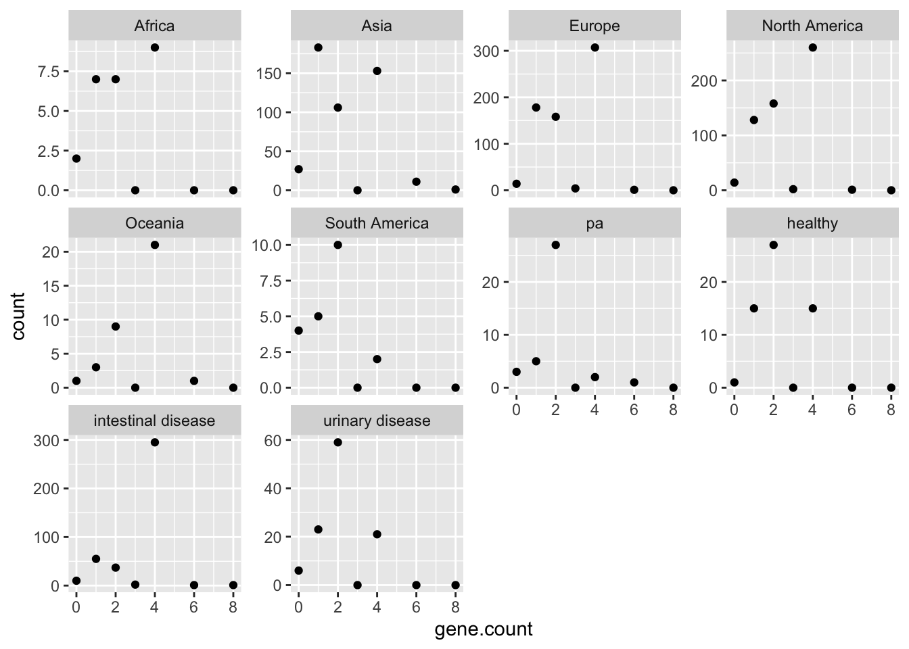
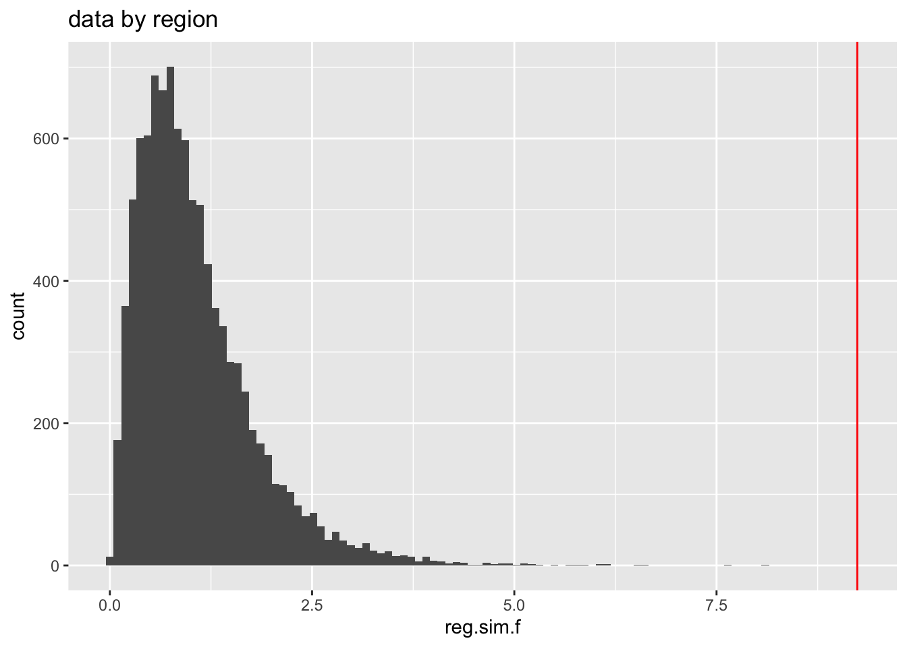
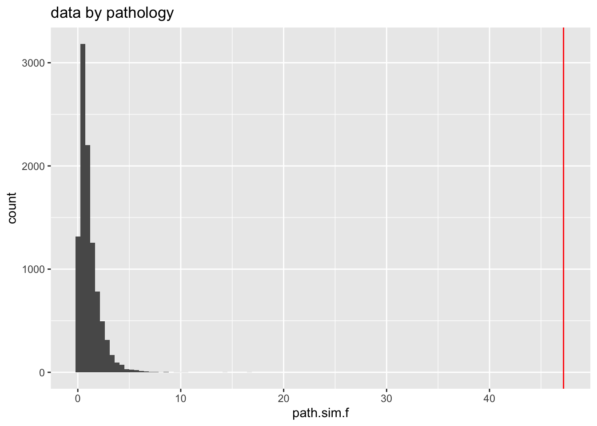

library(tidyverse)
library(MASS)
theme_set(theme_classic())
# Load and pre-process the data by region and pathotype
region <- read_csv("data/region.csv") %>%
filter(`gene number`!="TOTAL") %>%
pivot_longer(cols = 2:7, names_to = "category", values_to = "count") %>%
mutate(gene.count = as.numeric(`gene number`)) %>%
dplyr::select(-`gene number`) %>%
group_by(category) %>%
mutate(freq = count / sum(count, na.rm = TRUE))
path <- read_csv("data/pathotype.csv") %>%
#filter(`gene number`!="TOTAL") %>%
pivot_longer(cols = 2:5, names_to = "category", values_to="count") %>%
mutate(gene.count = as.numeric(`gene number`)) %>%
dplyr::select(-`gene number`) %>%
group_by(category) %>%
mutate(freq = count / sum(count, na.rm = TRUE))
# I need to recreate the raw data to do an anova
# I wrote some *very* ugly code to do this, so I hid it in a separate file
source("R/recreate_raw_data.R")
raw_region_data <- recreate_raw(region) %>%
arrange(category) # this appears to have worked
raw_path_data <- recreate_raw(path)
raw_plot <- function(df) {
p <- ggplot(df, aes(x=category, y=gene.count)) +
geom_boxplot() +
geom_point(position=position_jitter(height = 0.3), alpha = 0.5) +
theme_classic() +
theme(axis.text.x = element_text(angle=-45, hjust=0))
p
}
p_region <- raw_plot(raw_region_data)
p_path <- raw_plot(raw_path_data)Testing differences in gene abundance among regions and pathotypes
Introduction
The purpose of this analysis is to assess potential differences in the distribution of a specific gene among microbes from a specific microbe. Because this document is public, I’m not going to name the gene or the microbe.
ANOVA
A simple way to do this would be an ANOVA. Let’s try and check whether the distributions of residuals and stability of variances look reasonable.
I don’t see obvious differences in distribution, but this is why we do statistics I suppose.
Is a linear model (ANOVA) good for these data? Specifically: ANOVA is fairly robust to unbalanced designs and to heteroskedasticity, but not to hetereoskedastic data in an unbalanced design. So let’s check the heteroskedasticity.
Linear model for regions
region_model <- lm(gene.count ~ category, data=raw_region_data)
summary(aov(region_model)) Df Sum Sq Mean Sq F value Pr(>F)
category 5 89 17.84 9.24 1.07e-08 ***
Residuals 1781 3438 1.93
---
Signif. codes: 0 '***' 0.001 '**' 0.01 '*' 0.05 '.' 0.1 ' ' 1This model finds signficant differences among regions. But before we take this too seriously, let’s check whether the residuals are normally distributed. A good way to do that is via a QQ plot. The
plot(region_model, which=2) # actually these don't look as bad as I imagined?Oof, that’s pretty grim. I’d say we these residuals are non-normally distributed enough that I don’t think this is a great model.
We could do a Tukey post-hoc analysis to determine which categories are significantly different from which. But given that QQ plot, I don’t think we should go down that road.

Linear model for pathotypes
path_model <- lm(gene.count ~ category, data=raw_path_data)
summary(aov(path_model)) Df Sum Sq Mean Sq F value Pr(>F)
category 3 207.8 69.28 47.19 <2e-16 ***
Residuals 602 883.8 1.47
---
Signif. codes: 0 '***' 0.001 '**' 0.01 '*' 0.05 '.' 0.1 ' ' 1Again, significant differences among pathotypes.
plot(path_model, which=2)Same situation here. Not great!
Poisson distribution?
I propose that we can think of gene distribution as a poisson process, where different values of \(\lambda\) indicate different probabilities of the gene being “handed out”. If this is the case, we can assess whether there are difference in lambda among regions or pathotypes - but first we need to assess whether the data are, in fact, poisson-distributed. We’ll simply load the data, fit it to a poisson distribution, and see whether the fit looks good. I think in this case a qualitative assessment is at least as good as some kind fo statistical test of goodness-of-fit.
d <- rbind(region %>% mutate(type="region"),
path %>% mutate(type="path")) %>%
mutate(category=factor(category, levels = c("Africa","Asia", "Europe", "North America", "Oceania", "South America", "pa", "healthy", "intestinal disease", "urinary disease"), ordere=TRUE))
ggplot(d, aes(x=gene.count, y=count)) +
geom_point() +
facet_wrap(~category, scale="free_y")
THESE ARE NOT POISSON-LOOKING DATA. I’m pretty sure that part of the issue is there is correlation between the two genes in terms of whether they are likely to appear in hte genome - that is, if one of the genes is present, the other is likely to be as well. Note there are almost never exactly 3 genes present.
So, I don’t really want to model this with Poisson distributions (or, we could model each gene separately with a Poisson distribution. Not sure whether that helps anyone).
Monte Carlo simulations
I think it is more robust to doa monte carlo simulation of variation in the ANOVA f ratio.
# There are, like, a lot of faster ways to do this
shuf_calc_f <- function(df, nrow) {
df <- df %>%
ungroup() %>%
mutate(shuf.cat = sample(category, size = nrow, replace=TRUE))
df
m <- aov(gene.count ~ shuf.cat, data = df)
f <- summary(m)[[1]][1,4]
f
}
n <- 10000
nrow.reg <- nrow(region)
nrow.path <- nrow(path)
reg.f.vec <- vector("double", n)
path.f.vec <- vector("double", n)
set.seed(512)
region.loop.time <- system.time({
for(i in 1:n) {
reg.f.vec[i] <- shuf_calc_f(region, nrow.reg)
}
})
set.seed(2112)
path.loop.time <- system.time({
for(i in 1:n) {
path.f.vec[i] <- shuf_calc_f(path, nrow.path)
}
})
# This takes ~22 sec per loop on my system
f_vals <- data.frame(reg.sim.f = reg.f.vec,
path.sim.f = path.f.vec)# Pull out actual f values
reg.f.real <- summary(aov(region_model))[[1]][1,4]
path.f.real <- summary(aov(path_model))[[1]][1,4]How do the real f values compare to the simulated, null-hypothesis values?
p_reg_hist <- ggplot(f_vals, aes(x=reg.sim.f)) +
geom_histogram(bins = 100) +
geom_vline(xintercept = reg.f.real, color="red") +
ggtitle("data by region")
print(p_reg_hist)
p_path_hist <- ggplot(f_vals, aes(x=path.sim.f)) +
geom_histogram(bins = 100) +
geom_vline(xintercept = path.f.real, color="red") +
ggtitle("data by pathology")
print(p_path_hist)
So: I have simulated 10^{4} and found that, for each case, the actual measured f values are much, much larger than they would be likely to be if the null hypothesis were true - so much larger that we can’t calculate a p value, because none of our 10,000 simulations captured a f value that big. We can say conservatively say that, in each case, p < 0.0001.